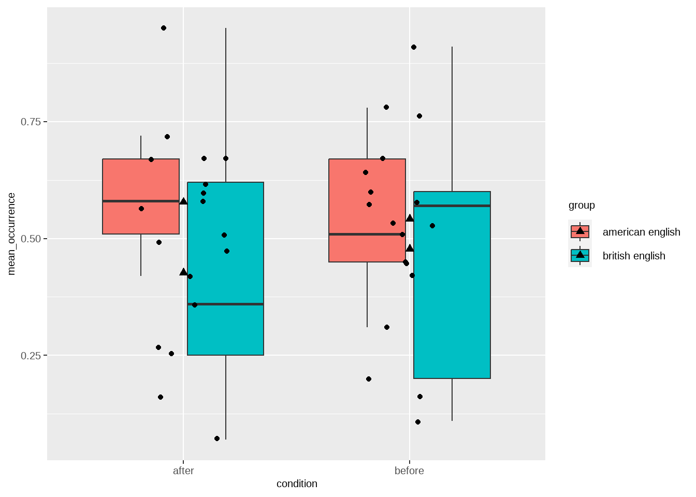
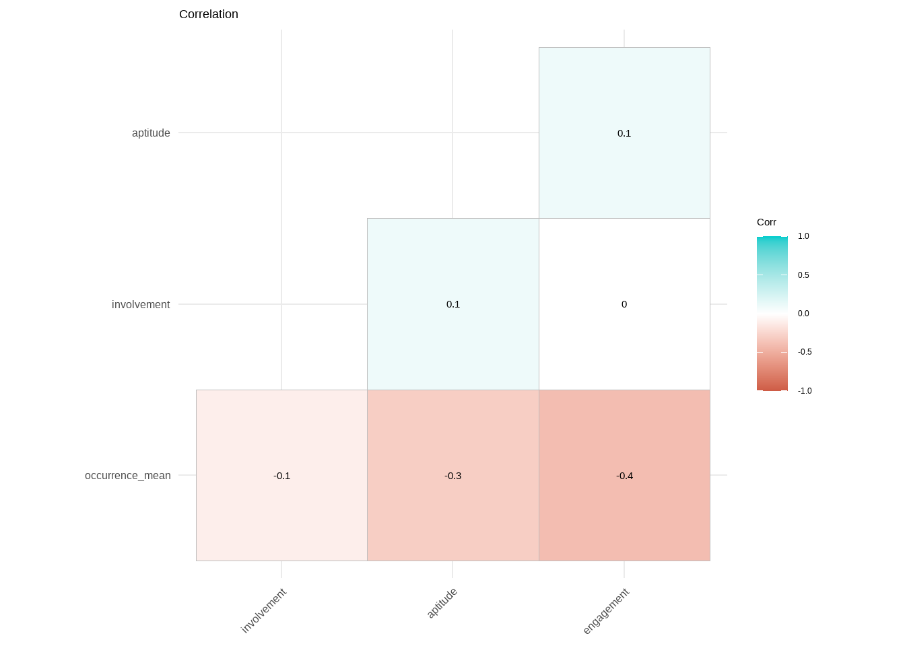
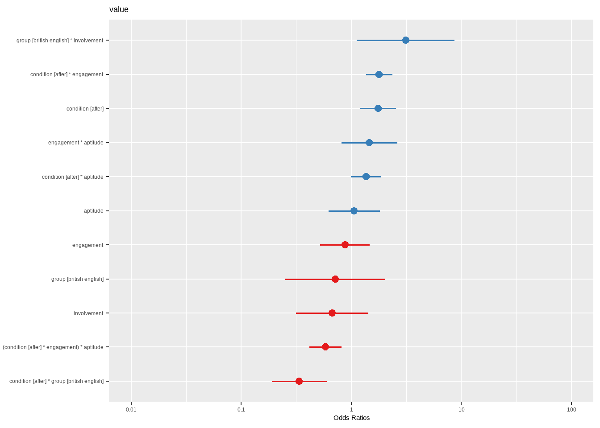
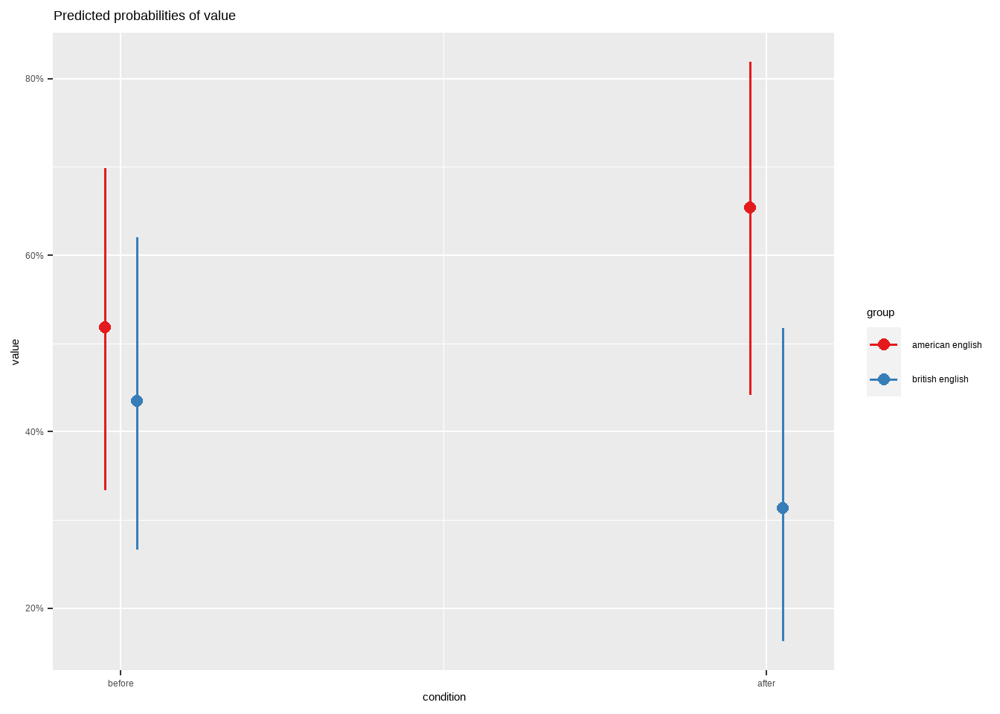
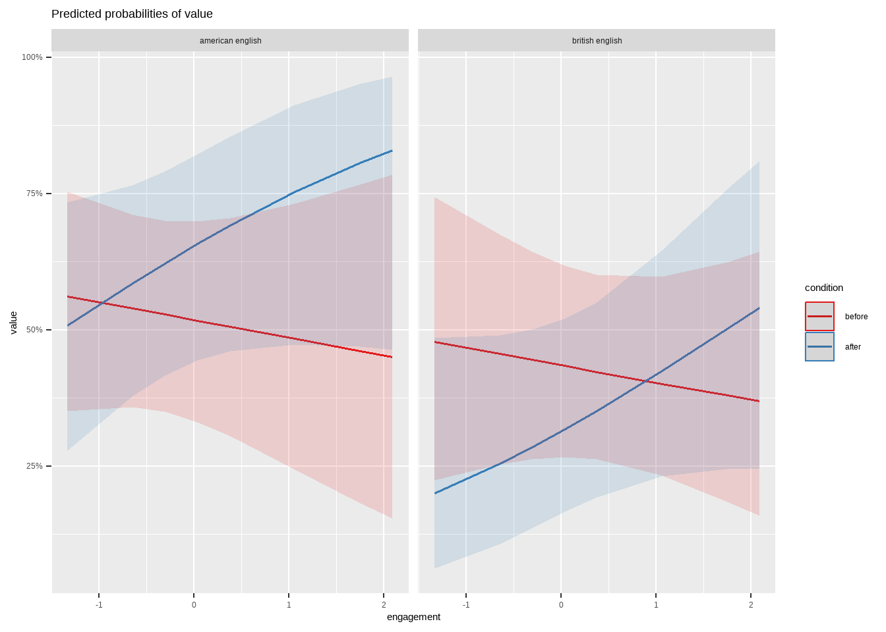
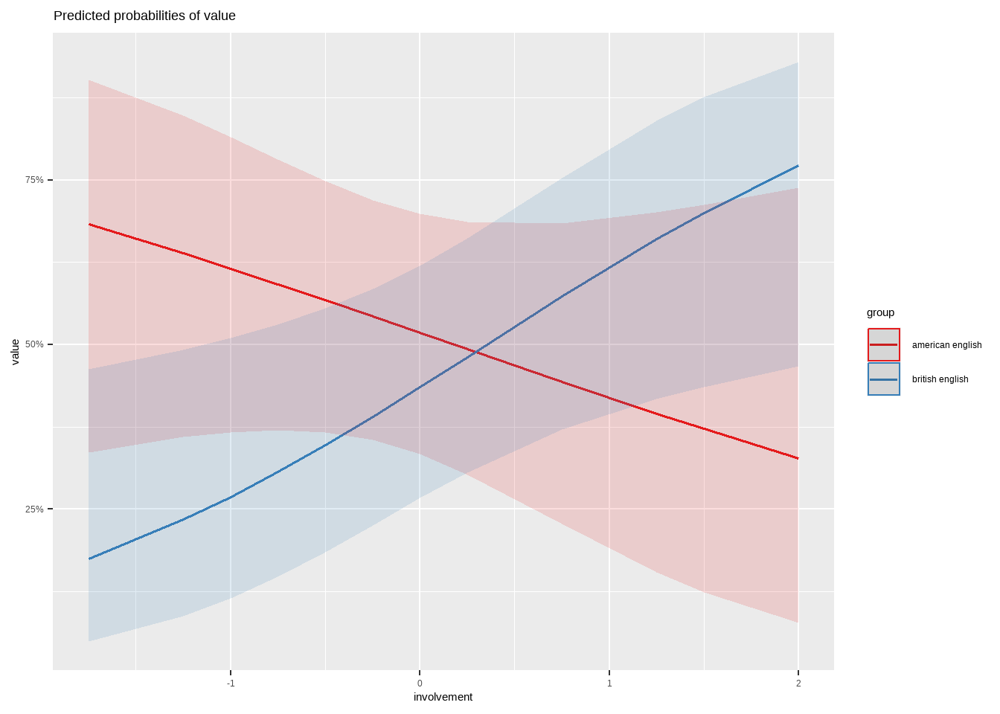

| Category | N |
|---|---|
| Total Participants | 18 |
| American group | 9 |
| British group | 9 |
The Effects of Television Exposure on the Accent of L2 Speakers of English: A Focus on Rhoticity
1 Introduction
Many people nowadays embark on the journey of learning English as a second or foreign language, driven by various motivating reasons such as applying for higher education, working abroad, consuming different types of entertainment (e.g., movies, TV series, and music), and for communicating with people from other cultures, among other factors (Mahu 2012). Acquiring a new language beyond early childhood involves developing various skills, including listening, reading, writing and most notably, speaking. Speaking is often considered the most challenging aspect of learning a foreign language as it encompasses two key components: accuracy and fluency (Derakhshan, Khalili, and Beheshti 2016). Both of these components require practice through production and interaction, along with sufficient exposure to the foreign language for improvement. However, opportunities to interact with native speakers of English may not always be readily available for second language learners. As a result, TV series and films have become increasingly popular means of exposure to English language, as well as a popular leisure activity for non-native users of English (Sockett and Toffoli 2012).
Streaming platforms such as Netflix and the widespread availability of content on the Internet have significantly increased accessibility to films and series produced in English for non-native audiences in the last decade. Consequently, studies have delved into the impact of media exposure on Second Language Acquisition (SLA) with and without subtitles, specifically focusing on vocabulary, listening comprehension, and pronunciation (Mitterer and McQueen 2009; Birulés-Muntané and Soto-Faraco 2016; Scheffler and Baranowska 2023). According to Scheffler and Baranowska (2023), subtitled programmes can positively influence the development of L2 pronunciation in production, particularly when the subtitles are in the L2 target language. On the contrary, Wisniewska and Mora (2020) argue that L2 pronunciation, specifically in production, is improved by exposure to uncaptioned L2 audiovisual materials, as well as with intentional focus on pronunciation.
Furthermore, it’s noteworthy that researchers have consistently found that participants view watching TV series or films as a motivating factor for studying English (Wang 2012; Dizon 2018). For instance, research by Dizon (2018) suggests that the learning effectiveness of L2 students of English can be enhanced by streaming TV shows or movies on Netflix. This exposure provides them with access to L2 vocabulary, increases their motivation to learn, and offers pragmatic knowledge in the L2. Additionally, exceptional learners in L2 phonology, who have achieved a native-like accent, have reported that watching TV and films in the target language contributes to their exceptional pronunciation skills (Moyer 2014).
The study of media exposure’s influence on L2 phonology also encompasses dialect acquisition, where speakers can acquire a new accent or dialect; a phenomenon referred to as Second Dialect Acquisition (SDA) (Nycz 2019). This can manifest in various ways, such as adopting a regional variety of one’s first language (L1) due to mobility (Chambers 1992), or occurring when speakers encounter new dialects of an L2 (Drummond 2013). According to Nycz (2019), SDA can potentially arise through either explicit or implicit learning processes. Implicit learning is more common in SDA, unfolding unconsciously as speakers gradually adjust their pronunciation to align with the surrounding dialect. In sociolinguistics, this is recognized as accommodation or convergence (Nycz 2019). Moreover, convergence and divergence are distinct forms of accommodation, where a speaker either aligns or distances themselves from an interlocutor’s linguistic patterns (Giles, Coupland, and Coupland 1991). From all this information, it is apparent that the most crucial element of accommodation is interaction between individuals. However, experimental work suggests that convergence may also occur from imitating voices via headphones or speakers (Delvaux and Soquet 2007), which proves that direct interaction is not required.
For a considerable period, there has been a longstanding debate regarding the potential influence of television on language, particularly in terms of accent change. This is due to the fact that watching TV lacks the interactive element, which is considered a crucial component for L2 acquisition. As previously mentioned, it has been observed that speakers tend to align their speech patterns with mediated input, even in situations where there is no direct interaction or a visible conversation partner. According to Stuart-Smith et al. (2013), engagement with new linguistic input is a more important factor than interaction in the context of convergence and dialect learning. Stuart-Smith et al. (2013) emphasized that the level of psychological engagement with a specific television show plays a pivotal role in determining how much it contributes as a catalyst for linguistic change on the phonological level.
1.1 The present study
In this study, we focused on examining accommodation-driven shifts that occur independent of external or self-directed instruction. The first objective was to investigate (a) whether leisurely watching television has the potential to induce changes in an individual’s linguistic behaviors, particularly in pronunciation, thereby influencing the restructuring of phonological systems and their corresponding phonetic representations. The second objective was to explore (b) whether this form of accommodation is contingent upon the emotional and psychological engagement of the viewer with the television series and its characters. Unlike Stuart-Smith et al. (2013)‘s experiment, which focused on native speakers of English, our study extends the investigation to L2 accommodation, examining the engagement factor. Additionally, we have distinguished the engagement factor into two separate independent variables: engagement, representing participants’ engagement with the series, and involvement, defining participants’ emotional involvement with the series’ characters.
The competing phonological systems of the study are American and British English, and the response variable is rhoticity. In rhotic varieties of English, the ‘r’ sound is pronounced in all positions of words (e.g., word-initially, word-medially, and word-finally). On the other hand, in non-rhotic varieties, the ‘r’ sound is not pronounced at the end of words or in postvocalic environments (Costa and Serra 2022), meaning it occurs after a vowel. For this reason, the non-rhotic /r/ sound is also referred to as ‘postvocalic’ /r/. British English accents, particularly those from southwest England, are considered non-rhotic, while certain American English accents, primarily from northern and western states of the US, are classified as rhotic (Costa and Serra 2022).
In our study, we examine the presence or absence of the postvocalic /r/ sound in participants’ recordings both before and after media exposure. Along with the variables of condition (pre- and post-exposure), engagement, and involvement, we have included the independent variables group and aptitude. The group variable denotes the accent (American or British) that was assigned to participants, based on the television series they were exposed, while aptitude reflects their overall proficiency in English. First, we predict that the media exposure will influence both groups accents according to their television series. However, this effect may be slightly less in the American English group, given that the participants are native Italian speakers. Furthermore, we anticipate that the group with the highest of engagement and involvement ratings will exhibit greater variability in their accents following the media exposure. Lastly, it is predicted that the group with high aptitude ratings will also exhibit a significant L2 accommodation effect, indicating a greater degree of linguistic adaptation to the media content.
2 Method
The current section provides comprehensive details about the experiment’s methodology, covering aspects such as the number of participants, materials used, procedural steps, and additional insights derived from the study’s dataset concerning the experiment’s measurements (i.e., dependent and independent variables). This section is organized into four parts: participants, materials, procedure, and data exploration.
2.1 Participants
In the current study, 18 participants were recruited and divided equally into two groups: American English and British English, with 9 participants in each group. They are native Italian speakers who have acquired English as their second language (L2). The dataset does not include additional demographic information, such as the participants’ ages.
2.2 Materials
A list of sentences in English was primarily composed by the study’s second author. The sentences included 51 words containing postvocalic /r/ sounds. Some words were read 18 or 17 (e.g., driver and wears) times by the participants, while others were read 36 or 35 (e.g., learn) times. The reason behind the reduced number of reading times for those words is that their rows contained missing values (NA), and as a result, they were removed from the dataset. The postvocalic /r/ sounds occur in word-medial (e.g., birthday) and word-final (e.g., bar) positions, as indicated in the table below. The participants’ speech data were recorded before and after exposure to the media.
| N |
|---|
| 51 |
| word | before | after |
|---|---|---|
| antarctica | 18 | 18 |
| bar | 18 | 18 |
| birthday | 18 | 18 |
| car | 18 | 18 |
| card | 18 | 18 |
| cheer | 18 | 18 |
| chocolate-covered | 18 | 18 |
| circumstances | 18 | 18 |
| daughter | 18 | 18 |
| driver | 17 | 17 |
| earn | 18 | 18 |
| finger | 18 | 18 |
| first day | 18 | 18 |
| flirting | 18 | 18 |
| formal | 18 | 18 |
| girlfriends | 36 | 36 |
| hard | 18 | 18 |
| heart attack | 18 | 18 |
| hurt | 18 | 18 |
| information | 18 | 18 |
| learn | 36 | 35 |
| leather jacket | 18 | 18 |
| liar | 18 | 18 |
| murder | 18 | 18 |
| murdered | 18 | 18 |
| never ever | 18 | 18 |
| nurse | 18 | 18 |
| opportunity | 18 | 18 |
| others | 18 | 18 |
| perfect | 36 | 36 |
| person | 18 | 18 |
| polar bear | 18 | 18 |
| research | 18 | 18 |
| rewarded | 18 | 18 |
| river | 18 | 18 |
| share | 18 | 18 |
| shirt | 18 | 18 |
| sister | 18 | 18 |
| sleep over | 18 | 18 |
| social services | 18 | 18 |
| superpowers | 18 | 18 |
| turns | 18 | 18 |
| understand | 18 | 18 |
| uniform | 18 | 18 |
| vampire | 18 | 18 |
| warm | 18 | 18 |
| wears | 17 | 18 |
| weird | 36 | 36 |
| winter | 18 | 18 |
| working | 18 | 18 |
| worse | 18 | 18 |
2.3 Procedure
Participants were instructed to read the list of English sentences and respond to interview questions. As stated previously, these sentences contained words with postvocalic /r/ sounds, and participants were recorded reading them before and after their exposure to the selected television series. The focus was placed on whether participants, after the media exposure, pronounced or didn’t pronounce the postvocalic /r/ in the words.
The series chosen for media exposure were the popular shows “Atypical” (produced in American English) or “The End of the F*ing World” (produced in British English) from Netflix. These series were selected not only for their popularity but also for the authenticity of the accents they featured, aligning with the study’s objectives. Participants divided into two groups, American and British English, were assigned to watch one of the series accordingly for a duration of two weeks. After the media exposure, participants completed a questionnaire, focusing on their English language history, self-evaluation of their accents, viewing habits, and engagement with the series. Furthermore, the study monitored whether participants had prior exposure to the designated series or encountered other English accents during the experiment.
2.4 Data Exploration
In preparation for data modeling in this study, a comprehensive examination of the provided dataset was conducted. This involved performing descriptive statistics on the dependent variable within the value column, as well as on the independent variables - aptitude, engagement, and involvement, whose names correspond to the dataset columns. Additionally, the section provides insights into the number of speech data provided by each participant in both conditions (i.e., before and after). The Data Exploration section is subdivided into three parts: Speech Data, Presence of postvocalic /r/, and Aptitude, Engagement, and Involvement.
2.4.1 Speech Data
The current section delves into the data within the participant and condition columns. As previously mentioned, speech data were recorded from 18 different participants. Upon further examination, it was observed that each participant contributed 55 or 54 (in case of NAs in the dataset) speech data recordings for each condition (i.e., before and after media exposure), resulting in a total of 110 data points. Out of these, 109 and 108 data points were obtained from participants, taking into account instances with NAs. This discovery highlights the presence of multiple data points from each participant, leading to the selection of a linear mixed effects model for data analysis.
| Participant | Data Points |
|---|---|
| am1 | 110 |
| am2 | 110 |
| am3 | 110 |
| aw1 | 110 |
| aw2 | 110 |
| aw3 | 110 |
| aw4 | 110 |
| aw5 | 108 |
| aw6 | 110 |
| bm1 | 109 |
| bm2 | 110 |
| bm3 | 110 |
| bw1 | 110 |
| bw2 | 110 |
| bw3 | 109 |
| bw4 | 110 |
| bw5 | 110 |
| bw6 | 110 |
| participant | before | after |
|---|---|---|
| am1 | 55 | 55 |
| am2 | 55 | 55 |
| am3 | 55 | 55 |
| aw1 | 55 | 55 |
| aw2 | 55 | 55 |
| aw3 | 55 | 55 |
| aw4 | 55 | 55 |
| aw5 | 54 | 54 |
| aw6 | 55 | 55 |
| bm1 | 55 | 54 |
| bm2 | 55 | 55 |
| bm3 | 55 | 55 |
| bw1 | 55 | 55 |
| bw2 | 55 | 55 |
| bw3 | 54 | 55 |
| bw4 | 55 | 55 |
| bw5 | 55 | 55 |
| bw6 | 55 | 55 |
2.4.2 Presence of postvocalic /r/
The dependent variable of this study pertains to the presence or absence of the postvocalic /r/ sound in the recorded speech data, both before and after media exposure. As previously stated, the focus is primarily on the presence of the postvocalic /r/ after exposure to the television series. The variable is quantified using binary values (0-1), indicating the absence or presence of the sound, respectively.
Upon conducting descriptive statistics on the response variable, which included calculating the mean and standard deviation (SD), several key observations emerged. In the before condition, the response variable data for the American English group displayed a mean of 0.54 with a corresponding SD of 0.50. Conversely, the British English group exhibited a mean of 0.48 and a similar SD of 0.50. This indicates that there is greater variability in the responses of the British group compared to the American group, considering the response variable’s range from 0 to 1.
In the after condition, a noteworthy shift in means is evident. The mean of the American group has increased to 0.58, while the mean of the British group has decreased to 0.43. This signifies that the presence of postvocalic /r/ is more pronounced in the American group in contrast to the British group. Additionally, the SD of the American group has decreased to 0.49, while the SD of the British group remains at 0.50. This suggests that there is still relatively more variability in the data produced by the British group. The box plot below demonstrates the descriptive measurements of the response variable between the two groups in both conditions.
Since the dependent variable contains the binary values 0-1, which are categorical, this leads to the decision of selecting a logistic regression model for the data analysis. Furthermore, as it was found out that there are multiple observations for each participant in the dataset, this solidifies the decision of fitting a generalized linear mixed effects model (GLMER). A more thorough understanding of the significance of the observed differences between the two groups in both conditions, as well as which independent variables are significant factors for L2 accommodation in an unstructured, uninstructed media setting, is provided in the Results section.
| group | condition | mean | sd |
|---|---|---|---|
| american english | before | 0.54 | 0.50 |
| american english | after | 0.58 | 0.49 |
| british english | before | 0.48 | 0.50 |
| british english | after | 0.43 | 0.50 |

2.4.3 Aptitude, Engagement, and Involvement
The columns that contain the measurements aptitude, engagement and involvement refer to participants’ English aptitude, their engagement with the series and their emotional involvement with the series’ characters respectively. The data for these measurements were obtained once after the media exposure when participants were asked to complete the questionnaire. Therefore, the data for these measurements remain consistent across both conditions in the dataset (i.e., before and after exposure to the media).
The aptitude variable is measured on a scale from 1 (low aptitude) to 16 (high aptitude), where higher scores indicate greater aptitude in English. The same logic applies to the other two variables, engagement and involvement: the highest the score, the more participants were engaged with the series or emotionally involved with the characters. Unlike aptitude, engagement and involvement are measured on different scales: the engagement variable is measured on a scale from 2.5 to 7.5, while the involvement variable is measured on a scale from 4 to 11.5. The table below illustrates the mentioned ranges for each variable:
| Measurement | Range |
|---|---|
| Aptitude | 1 - 16 |
| Engagement | 2.5 - 7.5 |
| Involvement | 4 - 11.5 |
Furthermore, descriptive statistics were calculated, including the mean and standard deviation (SD), for the variables in both participant groups. According to the tables below, it is demonstrated that the mean of the aptitude variable for the American English group is 9.8, while for the British English group it is 12.0. The means indicate that the British group exhibits a higher level of aptitude in English. The SDs for the aptitude scores are 3.0 for the American group and 4.3 for the British group, which suggests that there is greater variability in aptitude scores among participants in the British group.
As for the engagement variable, the British group has a higher mean with a score of 5.0 compared to the American English group’s mean of 3.9. The SDs for the engagement scores are 1.0 for the American group and 1.6 for the British group, indicating the spread of scores around the mean for each group.
Finally, the mean of the involvement variable shows similar values between the two groups, specifically 7.2 for the American English group and 7.8 for the British English group. The SDs for the involvement scores are 1.8 for the American group and 2.2 for the British group.
| Group | Number of participants | Mean | SD |
|---|---|---|---|
| american english | 9 | 9.8 | 3.0 |
| british english | 9 | 12.0 | 4.3 |
| Group | Number of participants | Mean | SD |
|---|---|---|---|
| american english | 9 | 3.9 | 1.1 |
| british english | 9 | 5.0 | 1.6 |
| Group | Number of participants | Mean | SD |
|---|---|---|---|
| american english | 9 | 7.2 | 1.8 |
| british english | 9 | 7.8 | 2.2 |
2.5 Preparation of the data for the model
To prepare the data for the GLMER model, character data (participant, group, condition, and word) and the response variable value are converted into factors. Additionally, numeric independent variables (aptitude, engagement, and involvement) undergo standardization to ensure consistent scaling for meaningful interpretation within the model. Furthermore, the reference level of the categorical variable condition has been changed from after to before to enhance result interpretation. Correlations between the numerical independent variables are also checked. According to the correlation plot, there are no correlations among the variables.
rhoticity_dataset %>%
select(participant, group, aptitude, condition, engagement, involvement, value, word) %>%
mutate_if(is.character, as.factor) %>% # Transform character data
mutate(aptitude = scale(aptitude), # Transform numeric predictors
engagement = scale(engagement),
involvement = scale(involvement),
value = as_factor(value)
) -> df_rhoticity
df_rhoticity$condition <- relevel(df_rhoticity$condition, ref = "before")
levels(df_rhoticity$condition) %>% kable(col.names = "Order of the levels of variable condition") %>% kable_styling()| Order of the levels of variable condition |
|---|
| before |
| after |

2.6 The model
A GLMER model was fitted to analyze the presence or the absence of the postvocalic /r/ before and after the media exposure in participants’ recordings. The model included condition (before vs. after), group (British English vs. American English), engagement, involvement and aptitude, as well as their interactions as fixed predictors. In this model, two two-way interactions and one three-way interaction were constructed. The first two-way interaction is between condition and group, while the second one is between group and involvement. The three-way interaction consists of condition, engagement and aptitude. Random effects for participants and words were included to address individual variability. Specifically, random intercepts were added for participants and words, along with a random effect for the condition variable within participants. These random effects enhance the model’s ability to capture nuanced variations in the response variable. The BOBYQA optimizer is implemented in the GLMER formula to sustain model convergence.
df_rhoticity %>% glmer(formula = value ~ condition * group +
group * involvement +
condition * engagement * aptitude +
(1+condition|participant) + (1|word),
family = "binomial",
control = glmerControl(optimizer = "bobyqa",
optCtrl = list(maxfun = 100000))
) -> rhoticity_modelSingle term deletions
Model:
value ~ condition * group + group * involvement + condition *
engagement * aptitude + (1 + condition | participant) + (1 |
word)
npar AIC LRT Pr(Chi)
<none> 2212.8
condition:group 1 2220.8 10.0782 0.001500 **
group:involvement 1 2214.8 3.9801 0.046040 *
condition:engagement:aptitude 1 2219.2 8.3937 0.003765 **
---
Signif. codes: 0 '***' 0.001 '**' 0.01 '*' 0.05 '.' 0.1 ' ' 13 Results
According to the output of the GLMER rhoticity model, the effect of condition ‘after’ is statistically significant (p < 0.05) and positive in comparison to condition ‘before’, which serves as the model’s intercept reference level. This indicates an increase in participant’s pronunciation after media exposure (Std. beta = 0.56; 95% CI [0.19, 0.94]). The interaction effect of involvement on group ‘British English’ is also statistically significant and positive (p = 0.030; Std. beta = 1.14; 95% CI [0.11, 2.16]), suggesting a notable impact on the British English group. Similarly, the interaction effect of engagement on condition ‘after’ is statistically significant and positive (p < .001; Std. beta = 0.59, 95% CI [0.31, 0.86]), indicating a pronounced influence of engagement on pronunciation post-exposure. Lastly, the interaction effect of aptitude on the interaction of condition ‘after’ and engagement is statistically significant and negative (p = 0.002; Std. beta = -0.54; 95% CI [-0.87, -0.20]), implying a potentially inhibiting influence of aptitude on the accommodation effect.
3.1 Odds ratios interpretation
As mentioned earlier, the reference level for the condition variable is ‘before’. In the odds ratios plot below, the likelihood of participants pronouncing the postvocalic /r/ sound is reported in the ‘after’ condition. The blue figures, located on the right side, indicate the fixed effects and their interactions associated with the pronunciation of the postvocalic /r/ sound, while the red figures represent the opposite.

| value | |||
|---|---|---|---|
| Predictors | Odds Ratios | CI | p |
| (Intercept) | 1.08 | 0.50 – 2.32 | 0.851 |
| condition [after] | 1.76 | 1.21 – 2.55 | 0.003 |
| group [british english] | 0.72 | 0.25 – 2.03 | 0.530 |
| involvement | 0.67 | 0.32 – 1.43 | 0.300 |
| engagement | 0.88 | 0.52 – 1.47 | 0.618 |
| aptitude | 1.06 | 0.62 – 1.82 | 0.821 |
| condition [after] * group [british english] |
0.34 | 0.19 – 0.60 | <0.001 |
| group [british english] * involvement |
3.12 | 1.12 – 8.71 | 0.030 |
| condition [after] * engagement |
1.80 | 1.36 – 2.37 | <0.001 |
| condition [after] * aptitude |
1.36 | 1.00 – 1.87 | 0.053 |
| engagement * aptitude | 1.46 | 0.81 – 2.62 | 0.205 |
| (condition [after] * engagement) * aptitude |
0.58 | 0.42 – 0.82 | 0.002 |
| Random Effects | |||
| σ2 | 3.29 | ||
| τ00 word | 1.27 | ||
| τ00 participant | 0.82 | ||
| τ11 participant.conditionafter | 0.07 | ||
| ρ01 participant | 0.52 | ||
| ICC | 0.41 | ||
| N participant | 18 | ||
| N word | 51 | ||
| Observations | 1976 | ||
| Marginal R2 / Conditional R2 | 0.110 / 0.472 | ||
3.2 Post-hoc analysis and visualisations
In the post-hoc analysis of the two-way interaction group and involvement, it is indicated that the difference in involvement between the two groups is statistically significant.
emtrends(rhoticity_model, pairwise ~ group, var = "involvement", infer=T, adjust='bonferroni')$contrasts contrast estimate SE df asymp.LCL asymp.UCL
american english - british english -1.14 0.524 Inf -2.16 -0.112
z.ratio p.value
-2.174 0.0297
Results are averaged over the levels of: condition
Confidence level used: 0.95 In the “before” condition, there is no statistically significant difference in the likelihood of postvocalic /r/ pronunciation between American English and British English speakers. However, in the “after” condition, there is a statistically significant difference. American English speakers are 1.421 times more likely to pronounce postvocalic /r/ compared to British English speakers (estimate = 1.421, SE = 0.621, z.ratio = 2.288, p = 0.0221). This indicates a significant shift in pronunciation patterns after media exposure.
Comparing the estimated effects and p-values, it is observed: in the American English group, the contrast “before - after” has a stronger effect compared to the British English group. Both contrasts are statistically significant in their respective groups.
emmeans(rhoticity_model, pairwise ~ group|condition, adjust = "bonferroni")$contrastscondition = before:
contrast estimate SE df z.ratio p.value
american english - british english 0.335 0.532 Inf 0.628 0.5298
condition = after:
contrast estimate SE df z.ratio p.value
american english - british english 1.421 0.621 Inf 2.288 0.0221
Results are given on the log odds ratio (not the response) scale. emmeans(rhoticity_model, pairwise ~ condition|group, adjust = "bonferroni")$contrastsgroup = american english:
contrast estimate SE df z.ratio p.value
before - after -0.563 0.191 Inf -2.951 0.0032
group = british english:
contrast estimate SE df z.ratio p.value
before - after 0.523 0.201 Inf 2.606 0.0091
Results are given on the log odds ratio (not the response) scale. 


4 Discussion
The findings of this study show that media exposure has an effect on the pronunciation of the participants over a two-week period, which proves that accommodation-shifts can occur regardless of internal or external-instruction. This finding aligns with the study of Moyer (2014) for exceptional learners in L2 phonology, who had listed the activity of watching TV as one of the main factors that have contributed to their exceptional pronunciation skills. Additionally, it was found that there are significant interaction effects between condition and group, condition and engagement, as well as group and involvement. The first interaction proves the accommodation-shift, which occurs in the after condition, and the fact that it happens accordingly to the television series accent. The participants that watched the american show were consistently pronouncing the /r/ sound in the middle and final position of the words, while the participants of the British group started pronouncing less the postvocalic /r/ sound.
Regarding the factors of engagement and involvement, it is observed that the effect of engagement is more prominent than the effect of involvement. Nevertheless, both are considered significant predictors for the model’s predictions regarding L2 accommodation. This finding aligns with the hypothesis that both variables will be significant for L2-accommodation shifts, as well as with the findings of Stuart-Smith et al. (2013) for L1. Another predictor that is shown having significant effect on the interaction between condition and engagement is aptitude. Aptitude was found to have negative effect on the interaction, which might suggest that it does not contribute to L2-accommodation effect as much as engagement.
Even though, it is not reported in the experiment whether participants were watching the series with or without subtitles in their native or L2 language (Mitterer and McQueen 2009; Birulés-Muntané and Soto-Faraco 2016; Scheffler and Baranowska 2023; Wisniewska and Mora 2020), the effects of media exposure on speech production are consistent with these studies. As future research, it would be interesting to see if captions in L2 facilitate the accommodation-shifts.
5 References
Birulés-Muntané, Joan, and Salvador Soto-Faraco. 2016. “Watching Subtitled Films Can Help Learning Foreign Languages.” PloS One 11 (6): e0158409.
Chambers, Jack K. 1992. “Dialect Acquisition.” Language 68 (4): 673–705.
Costa, Davide, and Raffaele Serra. 2022. “Rhoticity in English, a Journey over Time Through Social Class: A Narrative Review.” Frontiers in Sociology 7 (May). https://doi.org/10.3389/fsoc.2022.902213.
Delvaux, Véronique, and Alain Soquet. 2007. “The Influence of Ambient Speech on Adult Speech Productions Through Unintentional Imitation.” Phonetica 64 (2-3): 145–73.
Derakhshan, Ali, Atefeh Nadi Khalili, and Fatima Beheshti. 2016. “Developing EFL Learner’s Speaking Ability, Accuracy and Fluency.” English Language and Literature Studies 6 (2): 177–86.
Dizon, Gilbert. 2018. “Netflix and L2 Learning: A Case Study.” The EuroCALL Review 26 (2): 30–40.
Drummond, Rob. 2013. “The Manchester Polish STRUT: Dialect Acquisition in a Second Language.” Journal of English Linguistics 41 (1): 65–93.
Giles, Howard, Nikolas Coupland, and IUSTINE Coupland. 1991. “1. Accommodation Theory: Communication, Context, And.” Contexts of Accommodation: Developments in Applied Sociolinguistics 1.
Mahu, Diana-Petruta. 2012. “Why Is Learning English so Beneficial Nowadays?” International Journal of Communication Research 2 (4): 374.
Mitterer, Holger, and James M. McQueen. 2009. “Foreign Subtitles Help but Native-Language Subtitles Harm Foreign Speech Perception.” Edited by Denis G. Pelli. PLoS ONE 4 (11): e7785. https://doi.org/10.1371/journal.pone.0007785.
Moyer, A. 2014. “Exceptional Outcomes in L2 Phonology: The Critical Factors of Learner Engagement and Self-Regulation.” Applied Linguistics 35 (4): 418–40. https://doi.org/10.1093/applin/amu012.
Nycz, Jennifer. 2019. “Media and Second Dialect Acquisition.” Annual Review of Applied Linguistics 39: 152–60.
Scheffler, Paweł, and Karolina Baranowska. 2023. “Learning Pronunciation Through Television Series.”
Sockett, Geoffrey, and Denyze Toffoli. 2012. “Beyond Learner Autonomy: A Dynamic Systems View of the Informal Learning of English in Virtual Online Communities.” ReCALL 24 (2): 138–51.
Stuart-Smith, Jane, Gwilym Pryce, Claire Timmins, and Barrie Gunter. 2013. “Television Can Also Be a Factor in Language Change: Evidence from an Urban Dialect.” Language, 501–36.
Wang, Danping. 2012. “Self-Directed English Language Learning Through Watching English Television Drama in China.” Changing English 19 (3): 339–48. https://doi.org/10.1080/1358684x.2012.704584.
Wisniewska, Natalia, and Joan C Mora. 2020. “Can Captioned Video Benefit Second Language Pronunciation?” Studies in Second Language Acquisition 42 (3): 599–624.